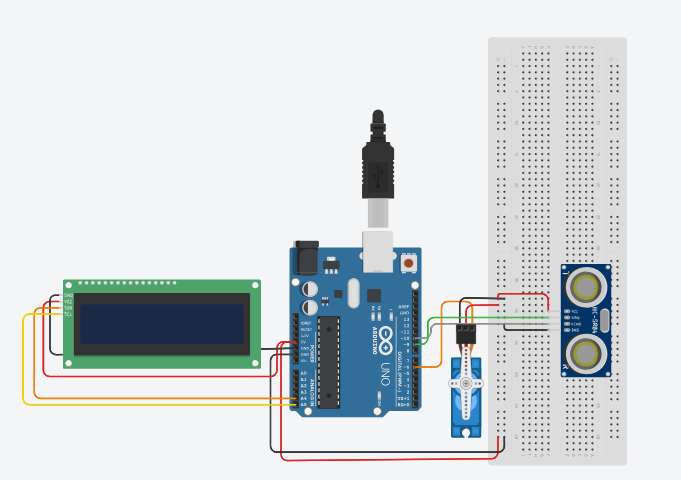

Nosso objetivo
Construir um protótipo capaz de automatizar a liberação de alimento usando sensores e um microcontrolador.
O AlimentaTech detecta quando o pet se aproxima e libera uma porção de ração. Um protótipo feito à mão com Arduino, sensor ultrassônico e servo motor.

O objetivo é um sistema que detecte a aproximação do animal e acione um mecanismo para liberar uma porção de alimento. Eletrônica, programação e automação aplicadas ao dia a dia.
Construir um protótipo capaz de automatizar a liberação de alimento usando sensores e um microcontrolador.
Tornar uma tarefa cotidiana mais prática, aplicando conhecimentos técnicos a uma situação real.
Montagem de circuitos, programação do Arduino, integração de componentes e testes de funcionamento.
Cada ciclo tem quatro etapas simples. Logo abaixo você pode ver tudo isso acontecendo no simulador.
O sensor ultrassônico HC-SR04 mede a distância e identifica quando algo se aproxima.
O Arduino recebe a leitura e executa a lógica programada para decidir a ação.
O servo motor gira o braço do reservatório e a ração cai no pote.
O mecanismo volta à posição inicial e aguarda um intervalo antes de um novo ciclo.
Aproxime a mão para liberar uma porção. Depois que o servo fecha, o sistema só fica pronto para servir novamente quando o sensor detectar que a mão ou o pet se afastou.
💡 Uma aproximação libera apenas uma porção. Para servir de novo, afaste a mão ou o pet até o sensor ficar livre e só depois aproxime novamente.
Toque em cada componente para ver a foto real da nossa montagem, o que ele faz e suas principais características.
O circuito foi projetado e testado no Tinkercad antes da montagem real. Veja o diagrama, a tabela de ligações e um código de exemplo.

| Componente | Pino do componente | Liga no Arduino |
|---|---|---|
| HC-SR04 | VCC | 5V |
| GND | GND | |
| Trig | D7 | |
| Echo | D6 | |
| Servo SG90 | Marrom (GND) | GND |
| Vermelho (+) | 5V | |
| Laranja (sinal) | D9 | |
| LCD 16×2 (I²C) | GND | GND |
| VCC | 5V | |
| SDA | A4 | |
| SCL | A5 |
⚠️ Esta é uma sugestão de ligação baseada no diagrama. Se o seu circuito usa outros pinos, basta ajustar as constantes no código.
// AlimentaTech - exemplo de código (ajuste os pinos ao seu circuito)
#include <Servo.h>
#include <Wire.h>
#include <LiquidCrystal_I2C.h>
const int PIN_TRIG = 7;
const int PIN_ECHO = 6;
const int PIN_SERVO = 9;
const int LIMITE_CM = 20; // distancia que ativa o alimentador
const unsigned long ABERTO_MS = 2000; // tempo com o reservatorio aberto
const unsigned long INTERVALO_MS = 5000; // espera entre duas porcoes
Servo servo;
LiquidCrystal_I2C lcd(0x27, 16, 2);
unsigned long ultimaPorcao = 0;
long medirDistanciaCm() {
digitalWrite(PIN_TRIG, LOW);
delayMicroseconds(2);
digitalWrite(PIN_TRIG, HIGH);
delayMicroseconds(10);
digitalWrite(PIN_TRIG, LOW);
long tempo = pulseIn(PIN_ECHO, HIGH, 30000); // microssegundos
if (tempo == 0) return -1; // sem eco
return tempo * 0.034 / 2; // ida e volta
}
void setup() {
pinMode(PIN_TRIG, OUTPUT);
pinMode(PIN_ECHO, INPUT);
servo.attach(PIN_SERVO);
servo.write(0); // posicao fechada
lcd.init();
lcd.backlight();
}
void loop() {
long dist = medirDistanciaCm();
lcd.setCursor(0, 0);
lcd.print("Dist: ");
lcd.print(dist);
lcd.print(" cm ");
bool pertoDoSensor = dist > 0 && dist <= LIMITE_CM;
bool podeServir = millis() - ultimaPorcao > INTERVALO_MS;
if (pertoDoSensor && podeServir) {
lcd.setCursor(0, 1);
lcd.print("Liberando racao ");
servo.write(90); // abre
delay(ABERTO_MS);
servo.write(0); // fecha
ultimaPorcao = millis();
} else {
lcd.setCursor(0, 1);
lcd.print("Aguardando pet ");
}
delay(200);
}💾 Instale as bibliotecas Servo e LiquidCrystal I2C na Arduino IDE. Este código é um exemplo didático da lógica do projeto.
Registros reais de cada fase: testamos peça por peça na protoboard e só depois montamos tudo dentro da estrutura. Toque nas fotos para ampliar.
Circuito desenhado e validado no Tinkercad.
Montagem do sensor, do servo e do display sem solda.
Ajuste da distância de ativação e do movimento do servo.
Caixa, braço e reservatório em papelão decorado.
Eletrônica instalada na caixa e protótipo funcionando.
Veja alguns momentos da montagem e dos testes realizados durante o desenvolvimento do AlimentaTech.
Registro da construção.
Mais momentos do desenvolvimento.
O protótipo pronto, com sensor, servo e reservatório trabalhando juntos.
Registro em vídeo do alimentador automático construído pelo grupo.
Trabalho em equipe para transformar uma ideia em um projeto de automação. Toque em um card para ler o comentário.
É um protótipo funcional, construído e testado pelo grupo. Para uso real ainda seria preciso validar o mecanismo com testes repetidos e usar materiais seguros para alimentos.
Não. O sensor ultrassônico só detecta proximidade; ele não reconhece individualmente quem está na frente.
Ele lê o sensor, executa a programação, mostra mensagens no display e comanda o servo motor.
Ele emite um pulso de ultrassom e mede o tempo até o eco voltar. A distância é (tempo × 0,034) ÷ 2, em centímetros.
O código usa um intervalo mínimo entre porções. Enquanto ele não termina, o pet pode ficar na frente do sensor que nada novo é liberado.
É barato, fácil de cortar e permite ajustar o mecanismo rapidamente. Uma versão final usaria plástico ou metal próprios para contato com alimentos.
Sim! Veja a seção Circuito, ligações e código. Você precisa de Arduino Uno, HC-SR04, servo SG90, protoboard e jumpers.
Não. É um protótipo educacional e não substitui os cuidados, a supervisão nem a orientação veterinária.